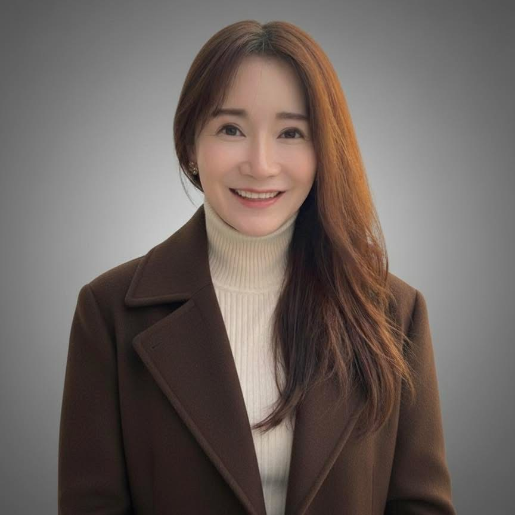

불확실성 속에서 최적의 결정을 내리는 투자자의 사고방식
KB인베스트먼트 · 윤소정 이사 · 벤처투자가 · 대표펀드매니저
IT 서비스 기획자에서 벤처투자가로, 두 번의 커리어 전환을 지나온 이야기

저는 IT 업계에서 서비스 기획·개발을 이끌며 네이버와 스마일게이트에서 플랫폼과 게임을 만들었습니다. 그리고 마흔, 완전히 새로운 세계인 벤처투자(VC)로 커리어를 전환하여 기술·콘텐츠·AI·커머스 등 다양한 산업의 변화를 읽고 투자하고 있습니다.
두 번의 커리어 전환을 지나며 깨달은 가장 중요한 사실은, 일이 달라져도 '판단력'과 '문제 해결 능력'은 미래를 설계하는 데 변하지 않는 핵심 역량이라는 점이었습니다.
벤처투자는 화려해 보이지만, 실제로는 수많은 불확실성 속에서 최적의 결정을 내려야 하는 일입니다. 99%의 실패 가능성을 안고 1%의 성공을 위한 결단이 필요하죠.
KB인베스트먼트에서 세컨더리 펀드, 문화 콘텐츠 펀드, 뉴 콘텐츠 펀드의 대표 펀드매니저로 활동하며, 초기(0→1)부터 후기(1→10) 그리고 세컨더리 Exit 구조까지 전 생애주기 투자를 경험했습니다.
플랫폼·커머스부터 AI·딥테크까지, 시장의 변화를 이끄는 기업들에 투자했습니다
잘 된 투자뿐 아니라 예기치 않은 시장의 반전, 흠집 난 가설,— 윤소정
팀의 균열과 기다림 속에서 배운 인내까지,
실패에서 얻은 학습과 경험이 저의 판단 구조를 만들어 왔습니다.
투자자의 시선으로 시장의 구조적 변화를 함께 읽는 독서모임
어떤 시장이 열릴지, 어떤 팀이 성공할지, 어떤 기술이 미래가 될지 — 투자자는 끊임없이 세상을 분석하고 결정을 내려야 합니다. 이 클럽에서는 '벤처캐피탈리스트가 세상을 바라보는 방식'을 탐구했습니다. 미래를 읽고, 리스크를 해석하고, 본질을 판단하는 사고 구조. 클럽장 소정 님이 심사역으로서 경험한 실전 사례, 실패, 배움, 오랜 시간 쌓아 온 투자 프레임을 나누며 '좋은 판단'에 관해 함께 고민했습니다.
최근 투자업계가 주목하는 핵심 투자 섹터와 관심 분야, 시장의 흐름을 바꾸는 주요 이슈를 함께 읽고 토론하는 모임입니다. 매달 한 권의 책을 중심으로 산업과 기술의 변화를 입체적으로 살펴보고, 해당 분야의 전문가를 초대 손님으로 모셔 현장의 시선과 깊이 있는 인사이트를 나눕니다.
단기적인 유행을 따라가기보다, 시장의 방향을 만드는 구조적 변화를 투자자의 관점에서 함께 해석해보고자 합니다.
벤처투자 현장에서 축적한 지식을 정리한 강의 노트
스타트업이 투자를 받기 위해 무엇을 준비해야 하는지, 투자자의 시선에서 바라본 전략과 실전 체크리스트
세컨더리 펀드의 구조와 Exit 전략. 1차 투자자와 달리 세컨더리 투자자가 바라보는 가치 평가의 관점
기술·팀·시장의 변화를 미리 포착하는 투자자의 프레임. 작은 단서에서 큰 흐름을 읽는 방법
IT 서비스 기획자에서 벤처투자자로. 마흔에 새로운 세계로 뛰어든 경험과 판단 기준
투자 너머의 이야기 — 인문, 사회, 그리고 책에서 발견한 것들
투자 문의, 강의 요청, 트레바리 클럽 참여 문의를 기다립니다